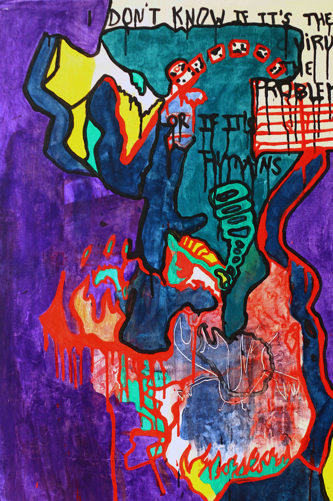

The Pull Of The Chaos, 2020, acrylic on canvas, 70 x 110 cm
 I Don't Know If It Is The Virus The Problem, 2020, acrylic on canvas, 70 x 110 cm
Who is Sojbdor/Sukkube ?
Behind this strange names sounds like an ancient Norwegian mystical place, is Charlène Levasseur, a young audiovisual artist from the South West of France, graduated from the Beaux Arts in Toulouse in 2018, she currently lives in Berlin.
Dedicated to a real passion for everything related to electronic music and visual arts, she doesn't hesitate to create her own label in collaboration with 9 other French artists.
Her work is a combination of : LBGTQI, cyber culture, human, cinema, science, colors, music, but also love stories. Through which, she speaks to us about the human condition as well as its fragile existence, while keeping a touch of dark humor ... to then make way for love.
Faced with all the emergence of digital technology today, she has chosen to adopt a post-digital attitude, opting for handmade special effects, using the minimum of virtual tools.
Video is one of the most accessible media, she said. She spends most of her time in front of her computer screen, especially watching the latest videos by Queer artists or the latest electronic music videos, such as the artist Eartheater.
Through the virtual world, she likes this possibility of being able to be another person, while having the possibility of meeting other communities with which she can exchange and share her projects.
The Internet is becoming an endless platform, like a sort of orderly chaos where information may or may not be chosen at the moment. Many artists such as : Claudia Mate, Lu yang, Martin Kohout, influence her a lot in her work by allowing her to develop a more enhanced reflection of what digital represents today.
Producer of electronic music and passionate since the age of 15, by her encounter with the video medium which is transformed into a kind of architectural alchemy containing multiple overlapping layers, which they draw their stability from perspectives of abysmal depth.
Painting remains her favorite field, because she reintroduces its layers, its windows, its compartments ... reminiscent of the stained glass windows of a church.
There is a real parallel between her digital work and her paintings, she wants to keep this part of real especially in our time where the virtual has never been so present.
Shoshana Zuboff's research on capitalism and theses on the surveillance of Maria Alexandra Lopez such as : "The redistributed presence of the subject in digital objects and the Internet", are important references in her work.
For her to live in a 3D or VR world, it's like an antonym, it's fascinating and scary at the same time. Like the fact that you geek, while feeling guilty about geeking.
"It's like having nothing more to hide, no longer having any private life, you are a slave and happy, you adapt to this way of living as if it were normal and you need it. Make artistic videos somehow allows you to insert yourself among the political and absurd media that are on social networks, so by making your videos you contribute, but in another way". Text by Naouel and Alicia from Freaky Freaky Magazine